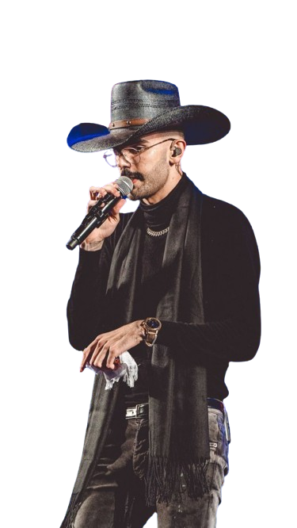
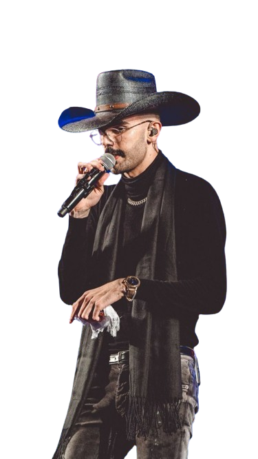
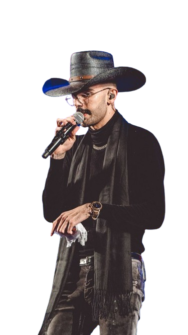
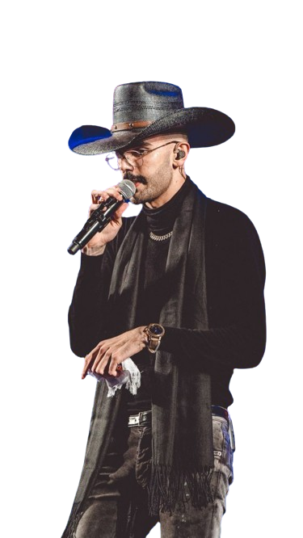

 

O cantor Luan Pereira de apenas 20 anos de idade chegou ao topo do Spotify com a música Dentro da Hilux,
que conta com as participações de MC Daniel e Ryan SP. Apesar de muito novo, o cantor se tornou
um dos principais nomes do agronejo
Músicas de Luan Pereira Instagram do Luan Pereira